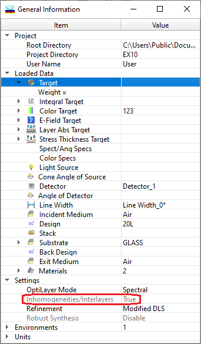

Inhomogeneities/Interlayers
Inhomogeneities/Interlayers
Navigation: OptiLayer Menu Commands > Analysis Menu >
Inhomogeneities/Interlayers
` <color_roughness_evaluation.html>`__ ` <idh_menu_analysis.html>`__ ` <inhomogeneity_interlayers_char.html>`__
The “Inhomogeneities/Interlayers” command in the / Analysis menu allows for evaluating the influence of bulk inhomogeneities and interlayers on design spectral characteristics. Analysis can be performed by taking into account the Inhomogeneities and Interlayers specified in the corresponding dialogs. To activate or deactivate this mode, use the right-click menu command or the / General Information Window.
